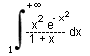
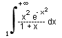
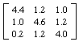

Numericka matematika
sept-okt.. '97.
asistent: Milan Drazic
1. Data je tablica
|
x |
-2 |
0 |
2 |
4 |
6 |
8 |
| f(x) | 2.1272 | 1.5167 | 1.7044 | 3.3285 | 5.0229 | 7.2814 |
Uz pomoc inverzne interpolacije priblizno odrediti tacku ekstremuma funkcije, a zatim i vrednost funkcije u toj tacki.
2. Izracunati sa tacnoscu  :

:

3. Koristeci LU dekompoziciju, racunajuci sa 5 decimala, naci inverznu matricu matrice:

4. Metodom Newtona sa tacnoscu  naci
sva resenja jednacine:
naci
sva resenja jednacine: